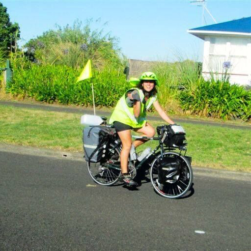

|  | Devi LockwoodDevi Lockwood is a multimedia journalist and current student in the Graduate Program in Science Writing at MIT. For four years before MIT, she traveled the world to document 1,001 voices on water and climate change. You can read her writing in The Washington Post, The New York Times, The Guardian, Slate, Bicycling Magazine, Yale Climate Connections, and elsewhere. In 2014, Devi graduated Phi Beta Kappa, summa cum laude from Harvard University, where she studied folklore and mythology. After MIT, Devi is starting a one-year fellowship at the New York Times Opinion desk. |